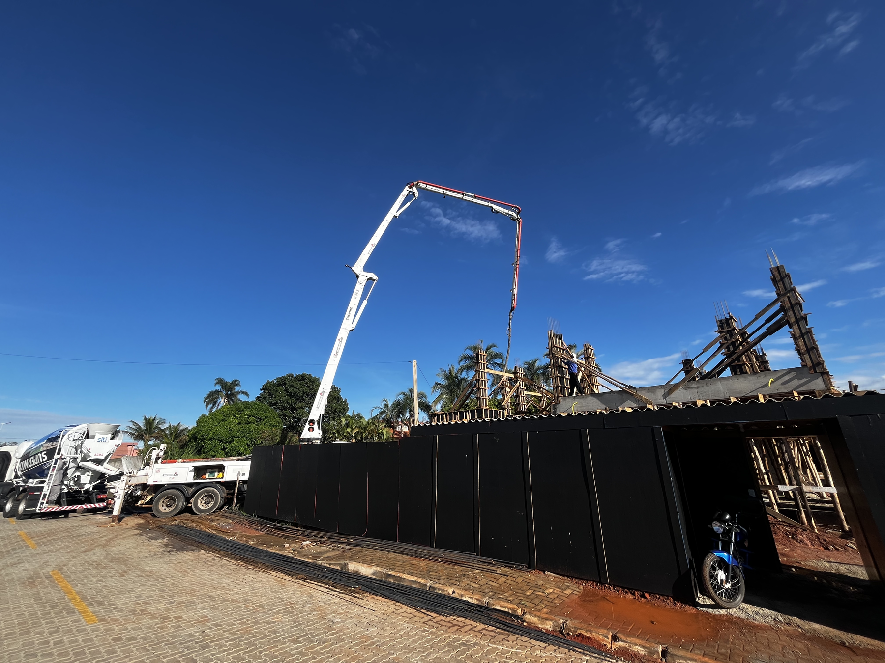
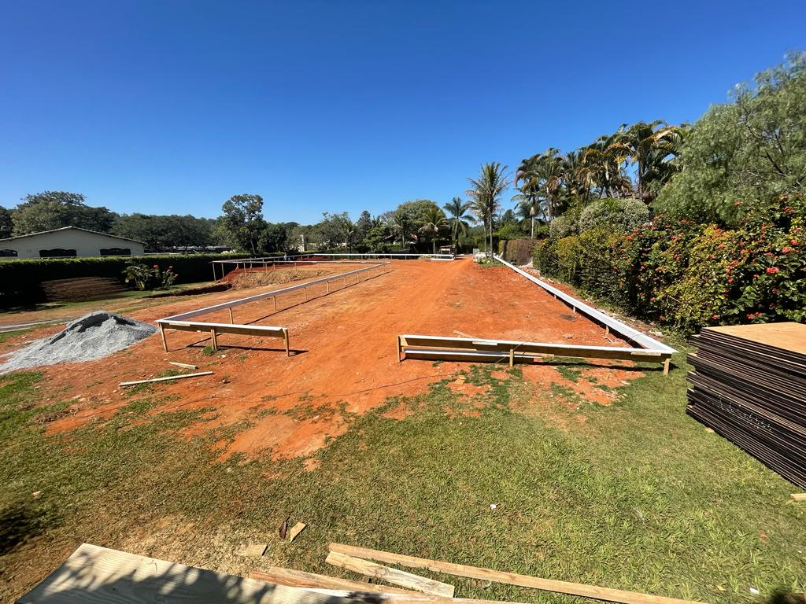
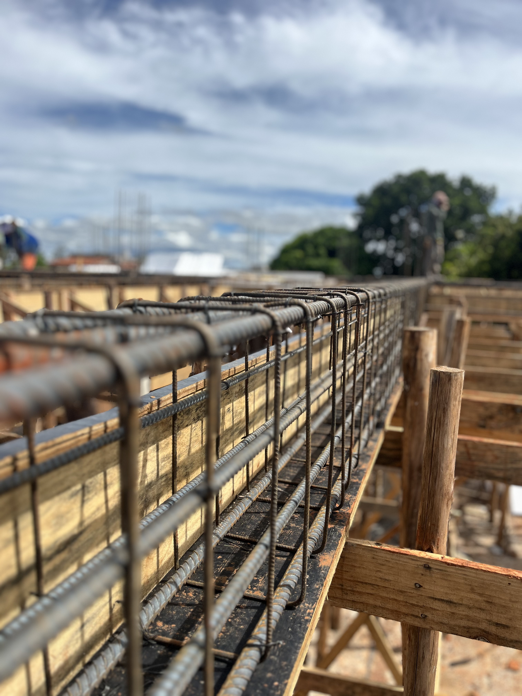
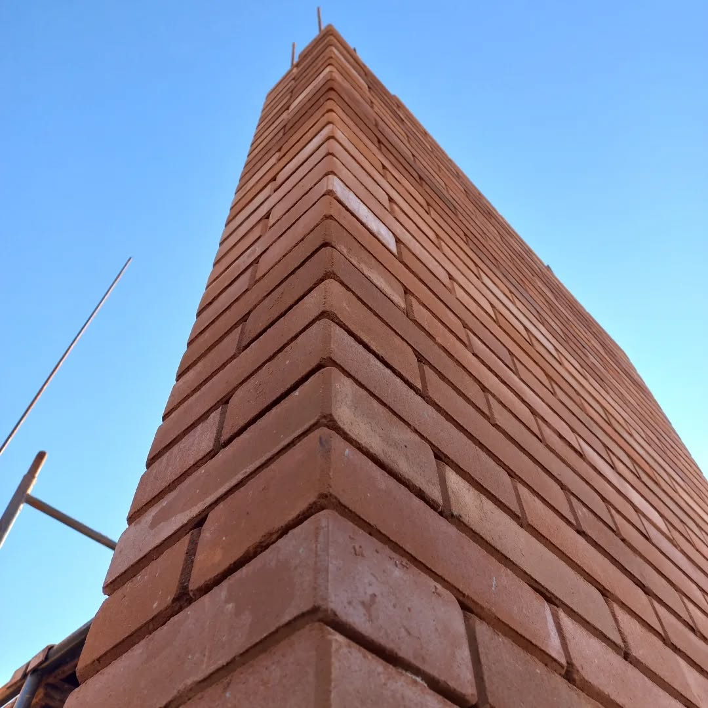

Intenção
Cada decisão precisa responder a uma razão: função, estética, conforto, desempenho ou permanência.

SOBRE A OTTOS · UBERLÂNDIA / MG
Antes da fachada pronta, existe chão aberto, aço, concreto, decisão e responsabilidade. É nesse intervalo — quando quase nada ainda parece uma casa — que a OTTOS constrói o que realmente importa.
OBRA EM ANDAMENTO · O PROCESSO TAMBÉM CONTA A HISTÓRIA
NOSSA HISTÓRIA
Não a contamos apenas por casas concluídas. Ela está nas escolhas feitas antes de qualquer acabamento, nas soluções que precisam funcionar por décadas e na disciplina de conduzir cada etapa com clareza.
Para nós, construir alto padrão não é adicionar excessos. É eliminar improvisos. É transformar intenção em método, método em estrutura e estrutura em um lugar que faça sentido para quem vai viver ali.

O COMEÇO
Há um momento em que o projeto ainda é apenas potencial. O terreno é aberto, os eixos são definidos e cada escolha passa a ter consequência real.
É aqui que a OTTOS estabelece o ritmo da obra: planejamento, leitura técnica, coordenação e decisões tomadas com antecedência. O que parece vazio é, na verdade, o primeiro capítulo da casa.
UM PRINCÍPIO SIMPLES
O que ninguém vê
sustenta tudo.
ESTRUTURA
Armaduras, formas, encontros, níveis e tolerâncias não são detalhes de bastidor. São a arquitetura silenciosa que permite que todo o resto exista com segurança e permanência.
É por isso que valorizamos o que fica escondido. A qualidade de uma casa começa onde o olhar do cliente normalmente não chega — e continua muito depois de a obra terminar.

COMO PENSAMOS
Cada decisão precisa responder a uma razão: função, estética, conforto, desempenho ou permanência.
Planejamento e execução precisam conversar. O padrão da entrega nasce do controle de cada etapa.
Uma obra sofisticada também precisa ser compreensível: decisões, responsabilidades e próximos passos devem estar claros.
Construímos pensando no tempo. No uso cotidiano, na manutenção e na sensação de que a casa continua certa anos depois.

DA MATÉRIA AO LUGAR
Por trás dela existe uma sequência de escolhas que precisa permanecer coerente do primeiro traço ao último detalhe. Essa continuidade é o que buscamos em cada obra.
Porque, para a OTTOS, construir não termina quando a casa fica pronta. Termina quando ela começa a pertencer à vida de quem a imaginou.
Começar uma conversaO PRÓXIMO CAPÍTULO